来源：https://shengcaiyoushu01.feishu.cn/docx/Gbj5dHks7oUcoxxzX3RcDHIYnig
大家好，我是生财内容负责人七天，也是学习AI的练习生七天可AI多，好久没分享我学习AI的日常了。
最近回溯了一些从4月份开启AI传术师俱乐部的运营，伴随着也开启了我从一个小白学AI的历程。一开始要接AI传术师的时候我还有一些惶恐，担心自己是AI新手，很难跟AI高手们同台对话。
到上周二，我做出了第一个网页页面，也就是html，不少人在朋友圈给我点赞。说实话成就感还是非常非常强的。
先给大家展示下：
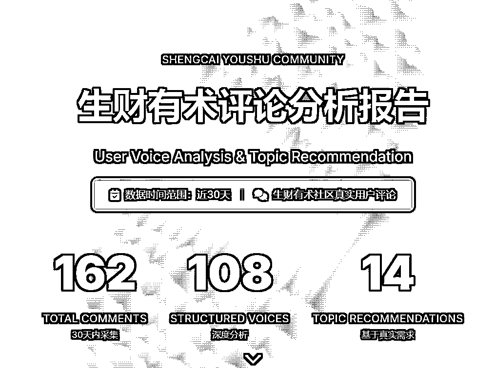
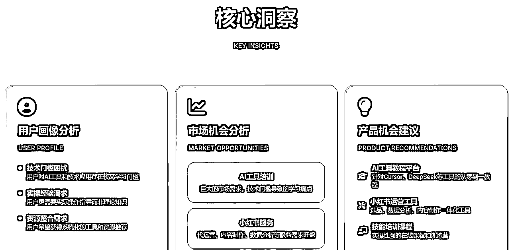
但是到现在有很多AI相关的术语我还不是很理解。我在下载cursor的时候还在问IDE是什么，然后dhj就跟我说你别管他是什么，你只要知道在这里能运营claude code就可以了。
所以这就是我学习AI和AI编程的路子：一边学，一边问，一边实操，一边懵懂。
事实证明你确实不需要完全理解他，你有什么不懂的问AI就好了。
我问技术：如何部署一个网站？他说问AI，然后直接演示在gpt的对话窗口问如何部署。
我问SCAI小伙伴：如何做一个页面网站？她说问AI，让她给你做。
在这个过程中我最大的思维突破是：AI不是你的工具，而是你最好的老师。正如小排老师提到的：不是万事不决问AI，而是万事问AI。
我学习AI的方式就是找师傅，抱大腿。比如我们办公室的知行和瓜斯，SCAI实验室的dhj，大潘都很擅长。其实即便你身边没有，生财线上也有很多。
我先简单概述下自己学AI的历程，给大家呈现下一个小白从完全不懂AI到做出第一个作品的过程。
我先告诉你的是：只要突破了心力卡点，剩下的一切问题都可以“被解决”。
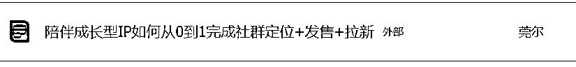
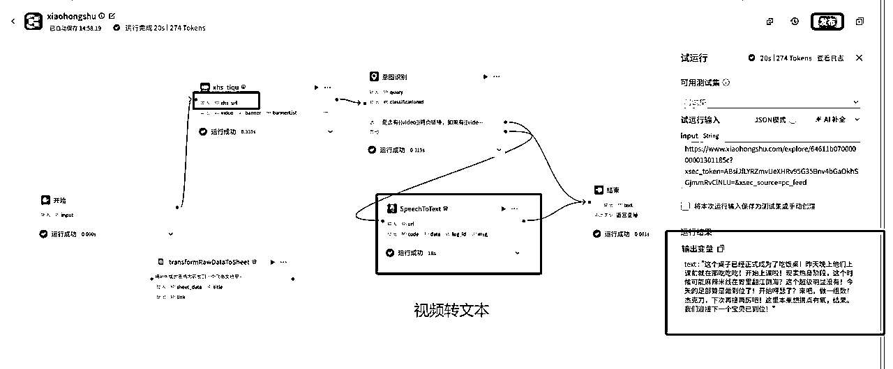
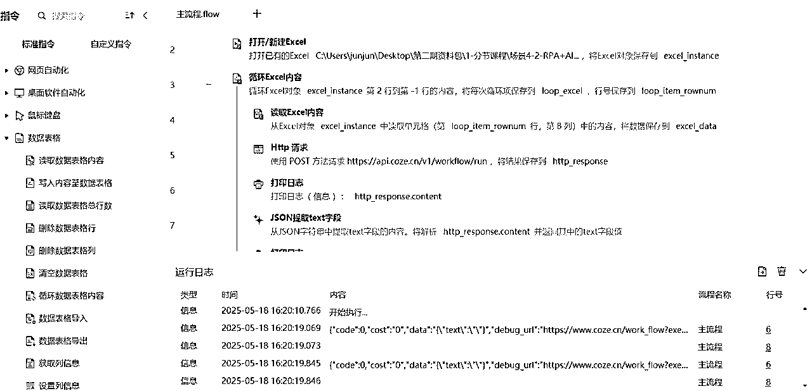
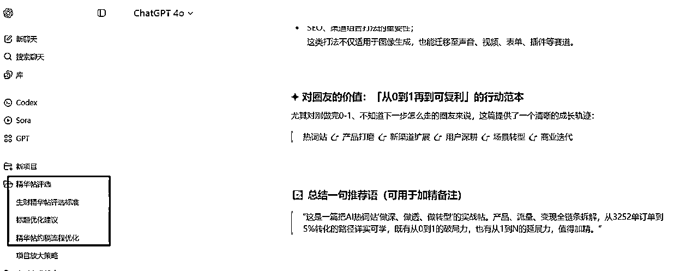
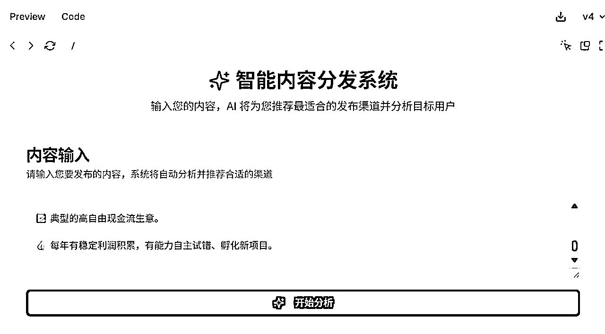
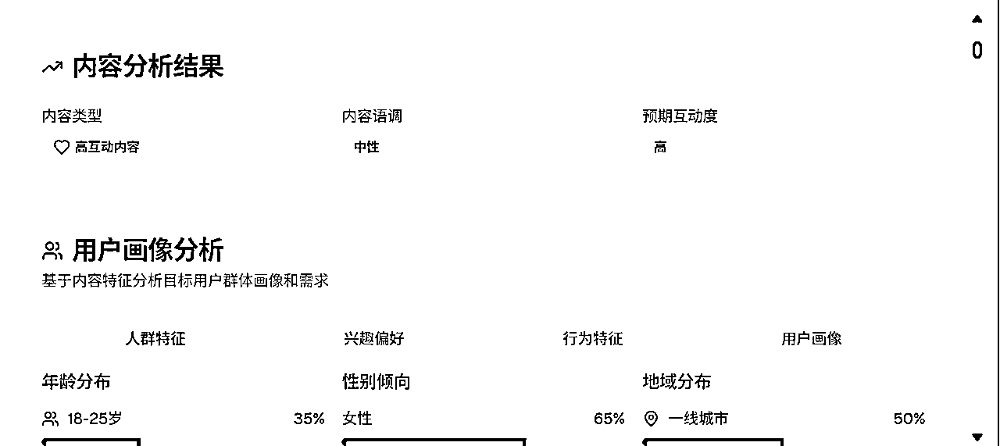
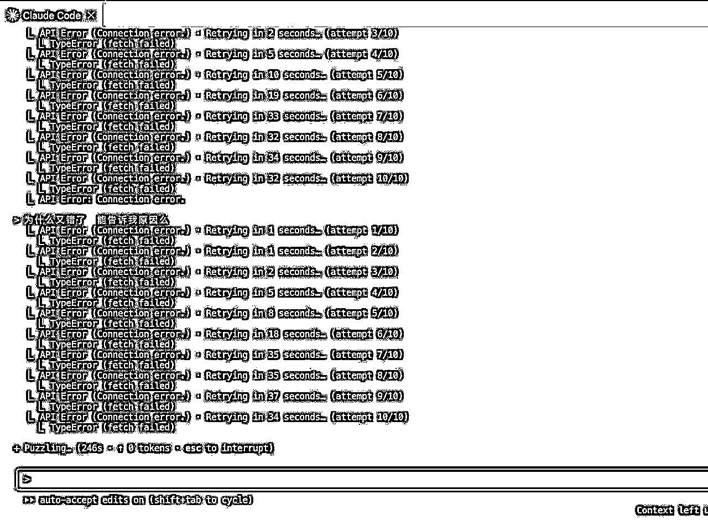
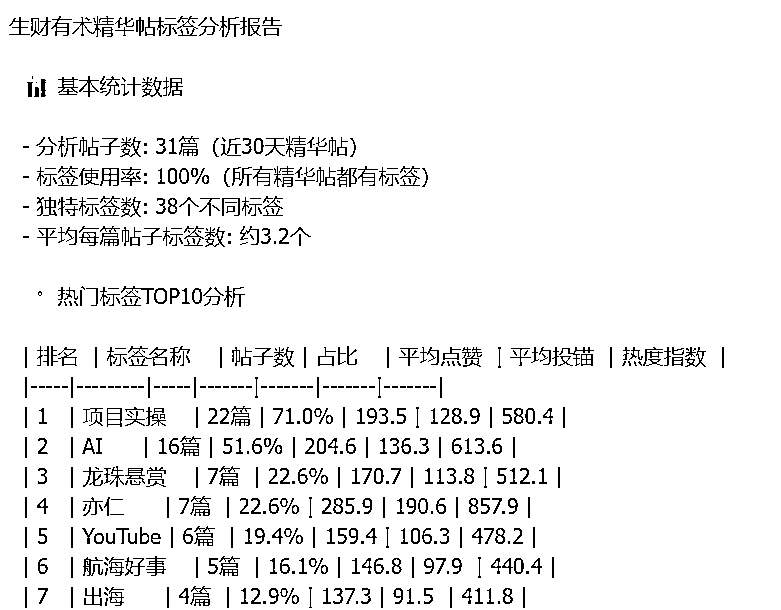
再对比看下下一步的进展：
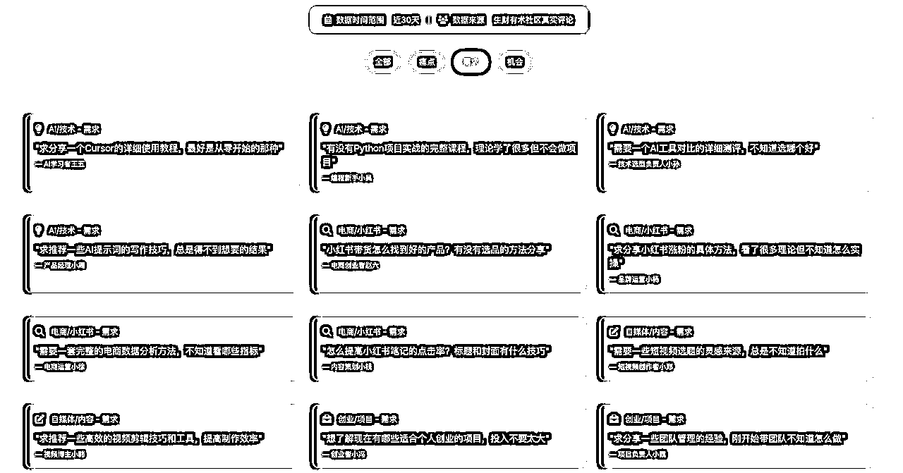
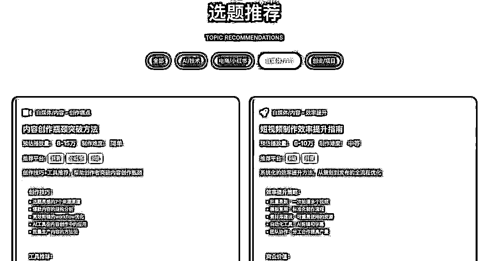
使用的网页生成代码是同事瓜斯发给我的：
1. 使用Bento Grid风格的视觉设计，纯黑色底配合亮橙色颜色作为高亮 2.强调超大字体或数字突出核心要点，点，与小元素的比例形成反差 3. 中英文混用，中文大字体粗体，英文小字作为点缀 4.简洁的勾线图形化作为数据可视化或者配图元素 5.运用高亮色自身透明度渐变制造科技感，但是不同高亮色不要互相渐变 6.模仿 apple 官网的动效，向下滚动鼠标配合动效 7.数据可以引用在线的图表组件，样式需要跟主题一致 8.使用 Framer Motion (通过CDN引入) 9.使用HTML5、Tailwindcss 3.0+(通过CDN引入)和必要的JavaScript 10.使用专业图标库如Font Awesome或Material Icons(通过CDN引入) 11.避免使用emoji作为主要图标 12.不要省略内容要点
1.第一步很容易卡在装梯子和下软件上。我第一次一个人装梯子花了2个小时，尽管有教程，但真的很繁琐。但是你要相信，只要突出这一步，剩下的每一步都会很简单。
2.心魔是阻碍学AI 的第一步。最难的不是你不行，而是你不相信自己行。
3.快速获得正反馈的前提是轻量化入手，比如用vo或者same.new先生成一个网页。（需要的话欢迎找我要教程）
4.找到属于你的AI学习搭子，每多一个坚持的动力多一份，在这个过程中，我打开过不下10个聊天窗口，分享学AI编程的卡点，请教问题。
5.找到你的榜样。榜样很重要，再多说一句的话，在身边成长起来的榜样很重要，我身边有三个很棒的榜样。第一个是亦仁，他大概演示过4.5次用gpt做策略，以及用claude code呈现一个功能的页面，当你亲眼看到一个功能用“说人话”的方式就能解决的时候，带给你的冲击是巨大的。当老板知道AI的边界时，你能做的就是快速学习，不然这个公司的隐藏KPI就是AI渗透率。
第二个是林悦己，从去年传术师见面会我见到悦己，再到她来SCAI，三个月期间机会没怎么约过饭，因为她真的很专注，一直在debug，写内容，不停优化。直到有一天我去找她约饭，听她聊完了三个月的编程历程。我突然意识到，是不是我也可以试试。如果就真的有一个不懂代码的女孩子做到了，那么我是不是也能做到。
当然我不是一定要做到，但是我真的好想知道“我可以！”
第三个是大树，他从0开始做AI访谈，在他拍摄的人物里，我看到好几个像我一样的普通人，没资源没技术，但是大家刚好抓住AI的红利，勇敢地下场把手弄脏，不停地试，再不停失败，继续不停优化，然后拿到了正反馈。
他分享采访gary的那篇文章里提到：
每次聊起 AI，我们都特别亢奋。我常常觉得，这是我们这一代人，有生之年遇到的最大一次机会。
它的变化太快了，快到所有的旧秩序都在被重构。曾经那些“必须名校、必须资源、必须大厂背书”的路径，正在被AI一点点打碎。
过去要“打怪升级”十年才能拿到的结果，现在可能几个月就能触到。我们从 0 开始，只是跑得快一点，抓得准一点，就能把结果干出来。真的不是我们多厉害，而是时代给了普通人一次弯道超车的可能性。
所以当你看到身边这么多人从0到1的时候，你内心只会觉得：我只要做了我肯定行啊！
Build in public是从花生这里得到的启发。我在做AI社群的时候，就持续把一些社群的优质信息分享到朋友圈和即刻。它其实核心要倡导的是，如果你想要做一个产品，你可以把你做这个产品的整个过程向公众开放展示，让大众来关注甚至参与到你做产品的过程当中。这样的话，由于过程透明，其实在做的过程当中就是在逐渐获取关注，以及和用户建立信任，有助于将来这个产品真正面世的时候，可以快速获得第一批的种子用户。
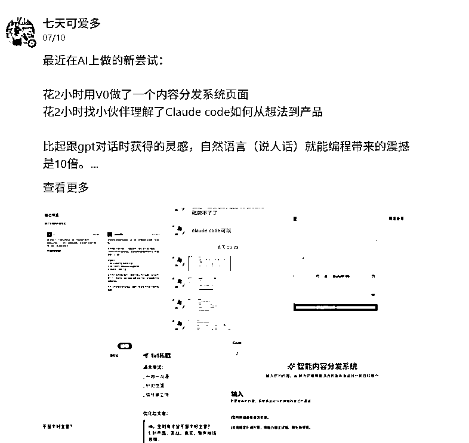
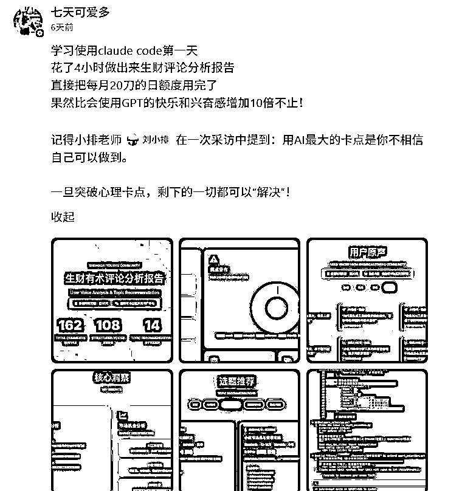
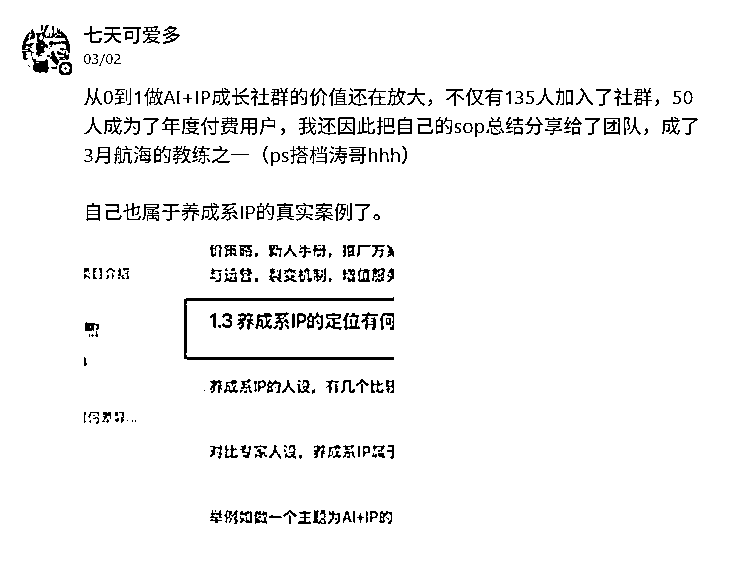
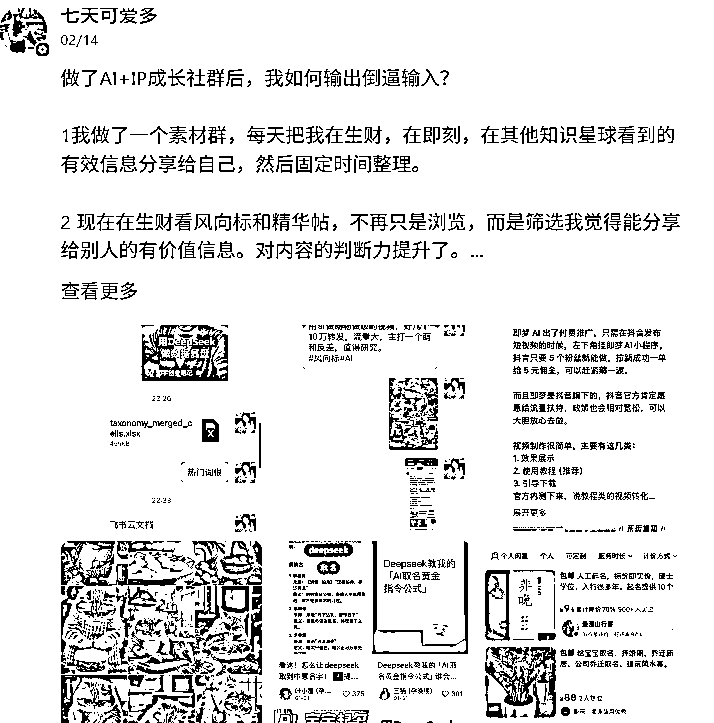
我觉得build in public 有几个点心得：
1.要对大家分享经验：让大家感受到我自己再分享自己的成长经验，不仅自己在做业务，也顺手复刻自己的业务心得给大家，邀请大家成为我的“云股东”。
2.分享自己的业务进展，让围观的人看到“我被认可”“我做成事”的过程，撬动一部分观望的人，加入我的社群，或者开始关注我的内容，他们会意识到“七天确实在认真研究AI”。
3.Build in Public 的核心不是展示和炫耀自己，而是保持开放，遇见有可能的同路人。
4.对在过程中帮助过你的人表达感谢，其实谁帮助了你，也侧面验证了对方对你的认可。
我写下这些，不是为了告诉你我多努力，而是想告诉你：一个完全不懂技术的人，只要愿意试，一样可以把AI用起来、把产品做出来、把自己的可能性打开。
因为我不是“准备好了才出发”，我是“出发了才准备好”。
下一个从0做到1的，也许就是你。
你不用一次性掌握所有AI技能，你只需要迈出“第一步”。
下一步要不要试试？比如做出你人生第一个网页，或者生成你第一个AI小工具？
如果你也想试试，也可以在评论区留言。
我不是专家，但我知道从“什么都不懂”到“做出第一个东西”的那条路怎么走。